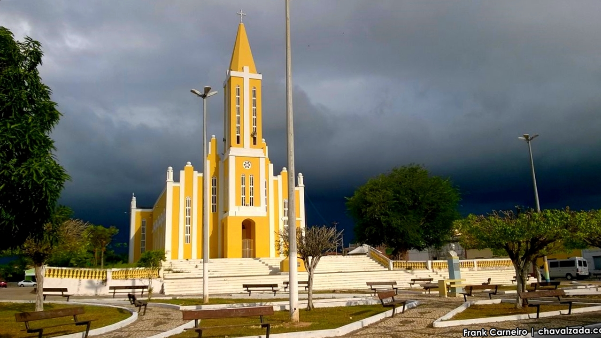

Informações técnicas sobre relevo, população, IDH etc.
| INFORMAÇÕES | |
|---|---|
| Municípios limítrofes | Barroquinha , Granja , Luis Correia , Cajueiro da Praia |
| Fundação | 22 de novembro de 1951 (69 anos) |
| Área total | 238,228 km² |
| Clima | Quente e úmido |
| PIB | R$ 40 363,676 mil |
| IDH | 0,579 — baixo |
| INFORMAÇÕES TERRITORIAIS | |
|---|---|
| Número de habitantes | 12 617 hab. |
| Superfície de Chaval |
23 823 hectares
238,23 km² (91,98 sq mi) |
| Densidade populacional | 54,9 ha./km² |
| Altitude de Chaval | 4 metros de altitude |
| Coordenadas geográficas decimais |
Latitude:
-3.0522
Longitude: -41.2404 |
| Coordenadas geográficas sexagesimais | Latitude: 3° 3' 8'' Sul , Longitude: 41° 14' 25'' Oeste |
| INFORMAÇÕES DO MUNICÍPIO | |
|---|---|
| Endereço da Prefeitura Municipal de Chaval |
Chaval
Prefeitura de Chaval
Rua Cel. José Porfírio, 506 Chaval - CE, 62420-000 Brasil |
| Telefone da prefeitura |
(88) 3625-1330
Internacional: +55 88 3625-1330 |
| Fax |
(88) 3625-1330
Internacional: +55 88 3625-1330 |
| Endereço electrónico da prefeitura |
prefchaval@bol.com.br
|
| Site oficial do município | Chaval.ce.gov.br |
| INFORMAÇÕES DO ADMINISTRATIVAS | ||
|---|---|---|
| Prefeito de Chaval | SEBASTIÃO SOTERO VERAS | |
| Partido politico | PDT | |
| INFORMAÇÕES DE TRANSPORTE | |
|---|---|
| Transporte urbano disponível | Rodovias Estaduais e Nacionais |
| Aeroporto |
Aeroporto Pinto Martins
46.2 km
Aeroporto Internacional Prefeito Dr.João Silva Filho
57.4 km
Aeroporto de Sobral
122.4 km
|
| INFORMAÇÕES DE DISTÂNCIA A OUTRAS CIDADES | ||
|---|---|---|
| São Paulo : 2355 km | Rio de Janeiro : 2220 km | Brasília : 1595 km |
| Salvador : 1144 km | Belo Horizonte : 1889 km | Manaus :2088 km |
| Curitiba : 2635 km | Fortaleza : 309 km mais perto | Recife : 898 km |
| Belém : 827 km | Porto Alegre : 3182 km | Guarulhos : 2335 km |
| Campinas : 2298 km | São Luís : 346 km | Goiânia : 1752 km |
| Distância calculada em linha reta! | ||
Conheça mais sobre a história da Chaval.
A região às margens dos rios Timonha e Baracuzinho era habitada pelos índios Tremembé. As bases de Chaval são: o aldeiamento Tremembé, a chegada das missões para a catequização dos mesmos e dos moradores de Granja e as ações do religioso Monsenhor Carneiro e seus familiares.
Em 1879 iniciou a construção de uma capelinha em louvor a Santo Antônio (que mas tarde ganhou o título de Matriz), e em torna da qual desenvolveu-se o povoado de Chaval. Nos dias de hoje a cidade está mais desenvolvida para lado oposto da entrada da igreja.
Saiba mais sobre os melhores lugares e o que fazer em Chaval.
entre os poucos pontos turisticos de ibiretama o que mais se destaca é o dedicado aos religiosos, trata-se da famigerada igreja da matriz de chaval onde em frente à mesma estã localizada o maior ponto de referencia do municipio que é a Praça de Santo Antônio de Pádua

Veja como chegar nos melhores pontos de Chaval
Essas rotas servem apenas para fins de planejamento. Obras, trânsito intenso, fatores climáticos ou outros eventos podem fazer com que as condições sejam diferentes dos resultados no mapa, por isso é preciso planejar o trajeto levando tudo isso em conta. Obedeça a todas as sinalizações ou avisos que aparecerem em seu trajeto.